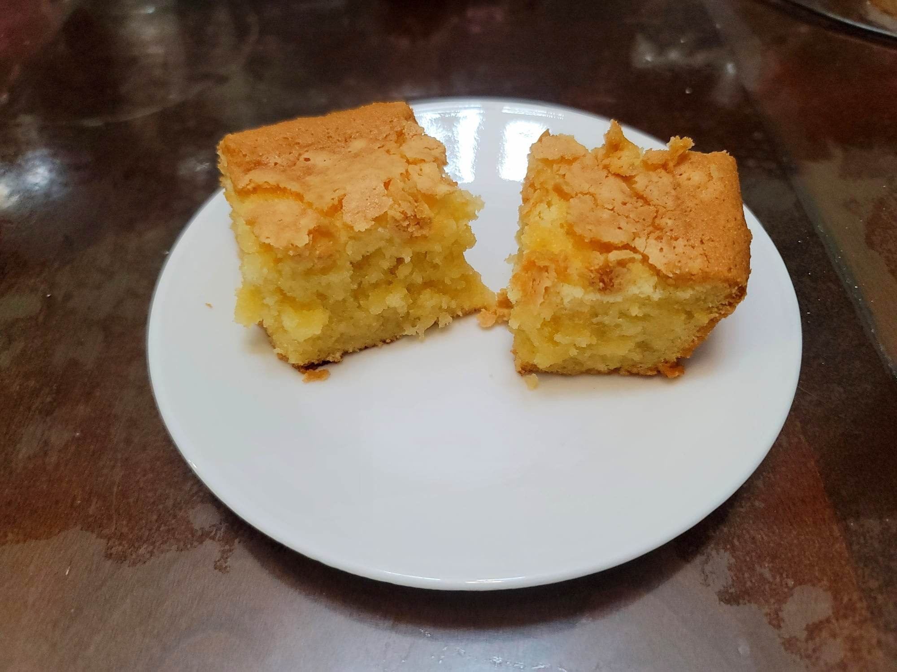

Butter Mochi

Ingredients:
- 1 lb Mochiko (Glutinous rice flour)
- 600 g Sugar
- 1 tbsp Baking powder
- 1/2 cup Butter, melted
- 5 Eggs
- 1 tsp Vanilla extract
- 12 oz Coconut milk
Instructions:
- Preheat an oven to 375 degrees Fahrenheit. Grease a 9x13 inch Baking dish.
- Place all ingredients into a large mixing bowl and mix together with an electric hand mixer until completely smooth. Then transfer to the greased baking dish. Bake for 1 hour.
- Remove from the oven and let cool to room temperature before slicing and serving.